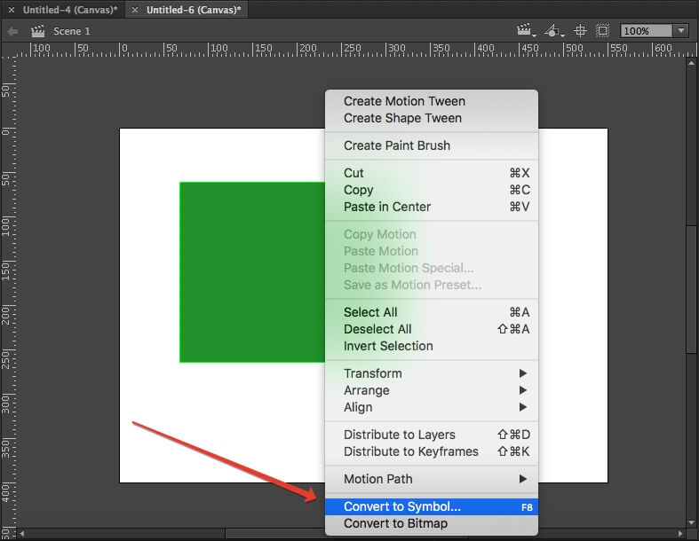
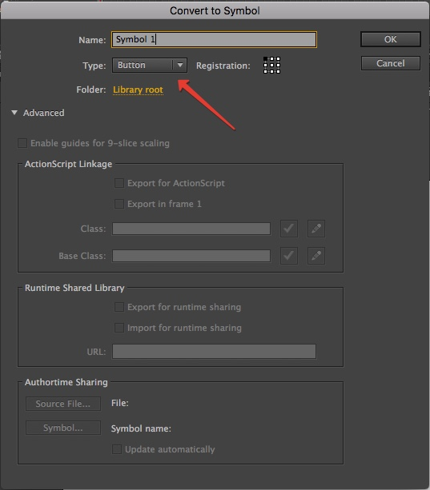
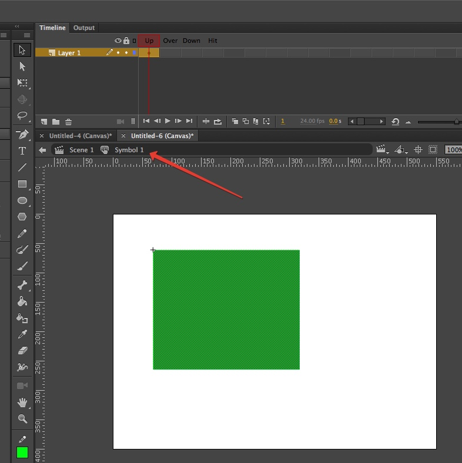
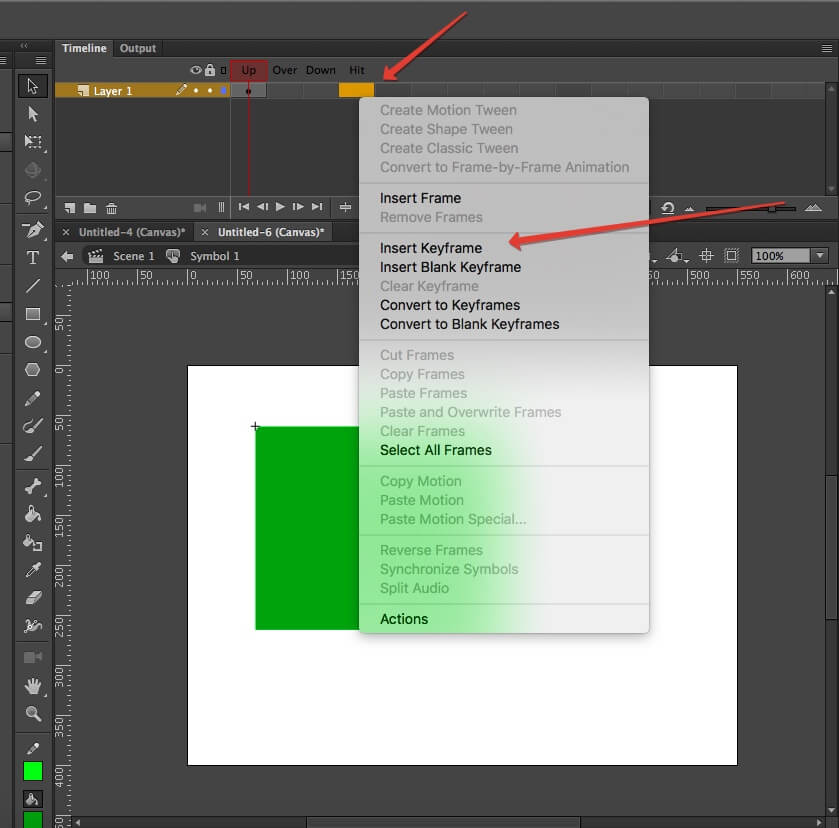
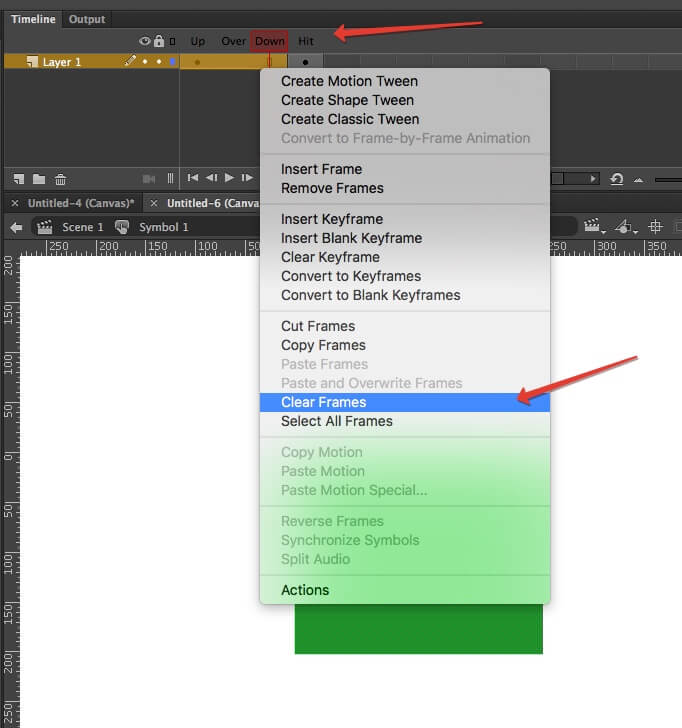
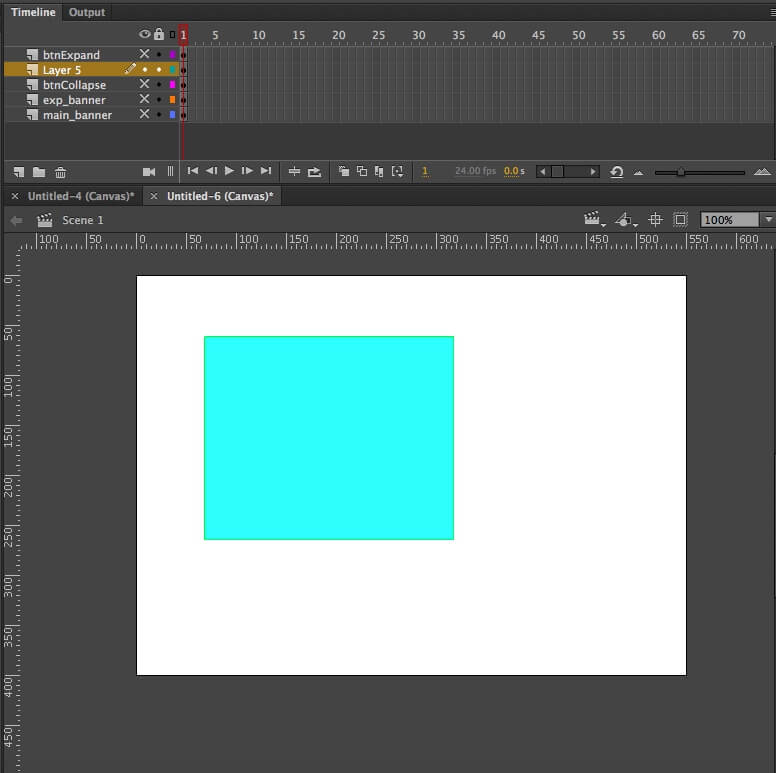

Выделяем нужный элемент и конвертируем его в символ

Даём название и выбираем Type: Button

Двойной клик по свежесозданному символу и мы попадаем в него

Делаем insert keyframe в кадр hit

Удаляем содержимое кадров up, over, down

Получаем прозрачную кнопку
